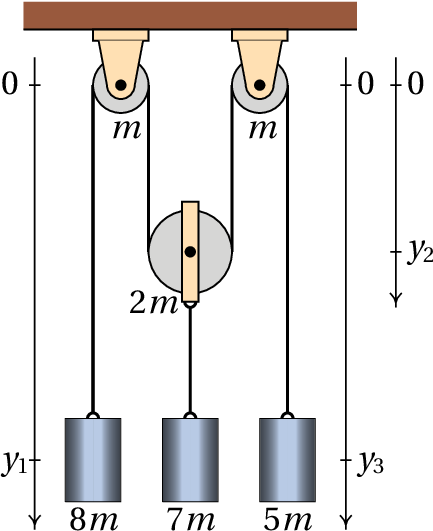
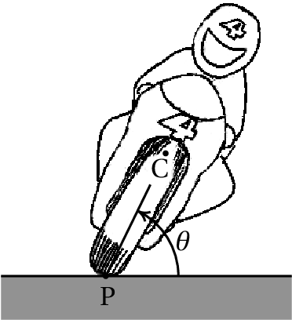
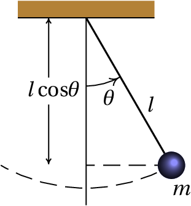

Each arm in a robot has usually 3 joints, with two perpendicular axes allowing two independent rotations, corresponding to two degrees of freedom. Thus, there are 6 degrees of freedom for each arm, enough to be able to reach any point, in any desired direction, within its maximum range. The ATHLETE ( All-Terrain Hex-Legged Extra-Terrestrial Explorer ) robot, used by NASA for lunar exploration, has six 3-joint arms which means 36 degrees of freedom. Plus the 3 degrees of freedom to determine the position of a point in the body of the robot, that makes a total of 39 degrees of freedom. The human arm, not including the hand, has 7 degrees of freedom corresponding to three independent rotations at the shoulder, two rotations at the elbow and two other rotations at the wrist.
All mechanical systems considered in the previous chapter have a single degree of freedom (a coordinate or an angle which determines the position) and two state variables: one variable for the position and its derivative with respect to time (linear or angular velocity).
The state of a system with degrees of freedom is specified by independent variables dependent on time, called generalized coordinates, which we will denoted by the letters: , , …, . These variables can be distances, angles or any other quantities. The time derivatives of each of these variables are the generalized velocities: .
The phase space of the system has dimensions. The coordinates of a point in phase space are ( , …, , , …, ) and the components of the phase velocity are ( , …, , , …, ). To determine the expression of the phase velocity at any point in phase space, it is necessary to know expressions for the generalized accelerations , in terms of the generalized coordinates and velocities, which are called equations of motion.
The equations of motion can be derived from Newton's second law. However, it would be necessary to relate each generalized acceleration to the acceleration of the center of mass of a component of the system and identify all external forces acting on that component. Some of those forces are forces of constraint, for example, the tension on a string or the normal force on a surface. As it was discussed in the previous chapter, the evolution equations can also be obtained from the derivatives of the hamiltonian function. The problem is that in more complicated systems than those considered in the previous chapter, the hamiltonian is not the mechanical energy per unit mass or moment of inertia, but it might be a more complicated expression. This chapter introduces a more general method to derive the equations of motion without the need to identify any forces of constraint.
The total kinetic energy of a mechanical system is equal to the sum of all the kinetic energies of translation and rotation of its parts. In general, it is a function that can depend on all the generalized coordinates and velocities and time:
The motion of a system is usually not completely free, but subject to some constraints; there are forces of constraint resulting from those constraints. For example, in a car moving on a road, the normal force exerted by the road on the tires is the force of constraint that ensures that the trajectory of the car stays over the surface of the road. The static friction on a wheel with traction is also a force of constraint, which ensures that the wheel rotates without sliding on the surface. The fact that the car remains in contact with the road surface as it moves and the friction on the tires prevents them from moving sideways, reduces the three coordinates of position to a single degree of freedom: the displacement along the road. When the wheels rotate without skidding, the angular velocity of the wheels depends on the speed of the car on the road. That dependence also implies a dependence between the angle of rotation of the wheels and the displacement of the car along the road; thus, only one of those two variables is enough to describe the motion of the car and the rotation of the wheels.
Each constraint on a system's motion reduces its number of degrees of freedom. A constraint that can be written as an equation depending on the generalized coordinates of the system is called holonomic. When a system is holonomic, namely all constraints to its motion are holonomic, Newton's second law leads to the following equations (the proof is given in Appendix B ):
where is the component of the generalized force, defined as:
where all forces (internal or external) are summed and is the position of the point force is applied. However, some of the forces do not contribute to the generalized force . For example, normal forces and static friction can be neglected because they are applied in a fixed point and therefore, . The tension in a string with constant length can also be ignored because it acts in opposite directions at both ends of the string and the sum of at both ends gives zero.
Among the forces to be included in , some may be conservative and, in these cases, , where is the potential energy associated to that force. Thus, the contribution of that conservative force to equals and equations 8.2 can be written as
where is the total potential energy of the system and the components of the generalized force include only non-conservative forces. Equations 8.4 are called Lagrange equations, valid for holonomic systems. In the particular case of conservative systems, the right sides of the equations are zero.
The cart in the figure, with mass , can move freely on the surface of an incline with mass . The incline has wheels that let it move freely on the horizontal table. Assuming that the mass of the wheels is much smaller than and and that the friction in the axes of the wheels are negligible, find the equations of motion of the system.

Resolution. To determine the positions of the cart and the incline at any instant, we need to know position of of some point of the inclined, on the horizontal table and the position of a point of the cart on the surface of the incline. The figure above shows how these two variables can be defined. Thus, the system has two degrees of freedom and the generalized velocities are and .
The derivative is also the velocity of the center of mass of the incline. And is the velocity of the cart, relative to the incline. Choosing an axis perpendicular to and pointing upwards, the vector expressions for the velocity of the incline and the velocity of the cart relative to the incline are:
The velocity of the cart, relative to the table, is the sum of those two vectors:
And the square of its module is,
The rotational kinetic energy of the wheels is negligible, since their masses are very small. Thus, the total kinetic energy of the system is:
The gravitational potential energy of the incline can be ignored because it remains constant. Therefore, the potential energy of the system is the gravitational potential energy of the cart:
Notice that the height of the cart's center of mass of the cart, from the surface of the table, is slightly bigger than but the difference is a constant that also be neglected since we only need the derivative of .
There are no nonconservative forces (or rather, they're effect is negligible). Thus, the right-hand sides of the Lagrange equations 8.4 are zero. In the first Lagrange equation, related to the coordinate , we must compute the following derivatives:
And the Lagrange equation becomes,
For the coordinate , the derivatives involved are
And the corresponding Lagrange equation is
Solving the two Lagrange equations for the accelerations and , we obtain the two equations of motion:
The two accelerations are constant; being negative and positive. That means that the cart descends the incline while this moves to the right.
In the system of pulleys and shown in the figure, the pulley in the middle can move vertically while the other two pulleys are fixed to the ceiling. The masses of the two fixed pulleys are , the mass of the moving pulley is and the masses of the 3 cylinders are , and ( for the cylinder in the middle already includes the mass of the support that links it to the moving pulley). The masses of the strings and the friction in the axes of the pulleys are negligible and the string makes the pulleys turn without sliding over them. Find the values of the accelerations of the 3 cylinders.
Resolution. This example will also be used to illustrate how to use Maxima to solve Lagrangian mechanics problems. We begin by defining the generalized variables. To determine the vertical position of the cylinders and the moving pulley 3 distances are required, which can be the three variables , and indicated in the figure. and are the positions of some points in the two cylinders on the left and the right and is the position of the moving pulley, which differs from the position of the cylinder in the middle by just a constant.
The constraint that the length of the string remains constant leads to the following equation:
where is a constant. This equation can be used to replace in terms of and . Thus, the system has two degrees of freedom, which can chose as and . The two generalized speeds are and ; the relation between and the two generalized speeds is obtained by differentiating the previous equation. The result is trivial, but we will show how it is done in Maxima, would be useful in cases more complicates. Derivatives computed with the Maxima's function diff are partial derivatives. To be find the ordinary derivative of the previous equation with respect to time, it is necessary to declare that the derivative of is not zero, but the velocity and similarly for . As it will be necessary later, we can also declare that the derivatives of and , are the accelerations and . The command used in Maxima to define the derivative of a variable is gradef. The following commands are used to define set and in terms of the degrees of freedom and the corresponding velocities
Since the string does not slide over the pulleys, the angular velocity of each pulley is , where is the velocity of the string relative to the center of the pulley and is the radius of the pulley. Assuming that the disk of each pulley is a uniform cylinder, its moment of inertia relative to its axis is , where is the mass of the pulley. Thus, the total rotational kinetic energy is
The total kinetic energy of the system is:
Where the indices 1, 2 and 3 refer to the 3 cylinders and the 3 pulleys (from left to right), the masses in lowercase letters are the masses of the cylinders and the masses in capital letters are the pulley masses. The velocities of the 3 cylinders are and the velocities of the strings, relative to the centers of the 3 pulleys are . Notice that the pulley in the middle has both translational and rotational kinetic energy.
The gravitational potential energy of the system, up to some constant, is:
We now replace the values of the masses in terms of the parameter and write these energies in terms of the 2 degrees of freedom and the corresponding velocities and (notice that , and ). That can be done in Maxima as follows:
And the two Lagrange equations are
Finally, the Lagrange equations are solved to find and and the results are used to compute the acceleration
It should be noted that the results do not depend on and the three accelerations are constant. The cylinder on the left side has acceleration equal to , downwards (because is positive). The cylinder in the middle and the moving pulley have acceleration , upwards and the acceleration of the third cylinder is , upwards. If the 3 cylinders were initially at rest, the cylinder on the left would start to go down and the other two cylinders would go up.
In the two examples solved in the previous section, the values obtained for the accelerations were constant. In more general cases, the accelerations will be expressions that depend on the generalized coordinates, velocities and time. The resolution of those systems of differential equations will be undertaken in later chapters.
Even before the equations of motion are solved, it is possible (and convenient) to find the values of the generalized coordinates for which the system will be in equilibrium. The condition for kinetic equilibrium is that the accelerations are zero and if the velocities are also zero, the equilibrium is static.
Recall that in systems with only one degree of freedom, the instability of the equilibrium points is determined from the sign of the derivative of the acceleration, with respect to the generalized coordinate. The equilibrium point is stable when the derivative is negative or unstable when it is positive.
A motorcyclist moving with velocity on a curve with radius tilts his body and the motorcycle at an angle , above the horizontal, towards the center of curvature of the curve, to avoid falling to the side. Find the value that should have, in terms of , and , which is the distance between the point of contact of the tires with the road, P, and the center of mass, C, of the system.
Resolution. Due to the inclination of the motorcycle, points P and C are not at the same distance from the center of the curve. Since the distance from point P to the center is and the speed of point P relative to the road is , the distance from point C to the center is and the speed of point C is:
in a direction parallel to the velocity of point P. But since the angle can vary, point C also has another velocity component , in the plane perpendicular to the velocity of P. Thus, the kinetic energy of translation is
There are also rotational kinetic energies, associated with the angular velocity , the angular velocity of the wheels on their axles and the rotation of the whole system in the horizontal plane, since the motorcyclist enters the curve pointing in one direction and leaves pointing in the opposite direction. The calculation of those energies goes beyond the goals of this introductory book; we will consider the case in which the change in those energies can be neglected. The gravitational potential energy of the system is
The partial derivatives of the energies with respect to and are
And the equation of motion is
The height of the center of mass, , is usually much smaller than the radius of the curve. Thus, the expression inside the parentheses is approximately 1 and a good approximation is
It the system is in equilibrium, , and the angle should be:
And the derivative of the generalized acceleration with respect to the angle is:
Which is positive because . We conclude that the equilibrium is unstable.
A cart moves on a horizontal table with constant acceleration . the cart has a vertical pole with a simple pendulum of mass and length . Determine the value of the angle at which the pendulum remains in equilibrium with respect to the cart. Assume that the mass of the pendulum's string is negligible and that the radius of the sphere is much smaller than .


Resolution. The velocity of the cart will always be horizontal and with value , where is the time from when the cart speed was zero. The figure on the right shows the velocity of the ball, relative to the cart, at an instant when is positive. The relative velocity equals and using a coordinates system with axis in the same direction and sense of the acceleration of the cart and axis vertical pointing upwards, the components of vector and the cart's velocity are:
The velocity of the sphere relative to the table is the sum of those two vectors
In Maxima, if is represented by the variable and by the variable , the expression of the kinetic energy of the sphere is obtained from its velocity, considering that
We next introduce the expression of the potential energy of the sphere , compute the derivatives of the generalized coordinate and velocity with respect to time, introduce them into the Laplace equation and solve it to obtain the expression for the angular acceleration which will be denoted by the variable .
Thus, the equation of motion is
There will be static equilibrium when the angular velocity and acceleration are both zero: , , which leads to the condition for the angle in the equilibrium position:
And the derivative of the angular acceleration with respect to the angle is
Which is negative because at the point of equilibrium is between 0 and . We conclude that the equilibrium is stable. The pendulum could be swing around the angle at the equilibrium position.
Notice that the equation of motion depends on the acceleration of the cart but not on its speed. A measurement of the equilibrium position of the pendulum can be used to find the acceleration of the cart, but not its velocity.
In all the examples shown in previous sections there were only conservative forces and thus the generalized force was zero. The following examples include non-conservative forces.
A simple pendulum is formed by a small object of mass , hanging from a string of length . The string's mass is negligible compared to . Determine the equation of motion, including the air resistance.
Resolution. The force of resistance of the air is proportional to the square of the velocity of the pendulum, and in the direction opposite to that velocity (see equation 4.14 in chapter 4). Since the velocity of the pendulum has value , the expression for the air resistance force is:
Where C is a constant. Choosing the origin at the point where the string is attached to the support, the position where this resistance force acts is
And its derivative with respect to is
where is the tangent unit vector to the circular trajectory of the pendulum, in the sense that increases. The generalized force is then
The kinetic and potential energies and their derivatives are similar to the last example in the previous section, setting
The Lagrange equation leads to
One of the advantages of Lagrangian mechanics compared to vector mechanics is not having to identify the forces of constraint, their directions and the points where they are applied. However, in some cases we may want to find those forces. For example, when there is kinetic friction between two surfaces, the frictional force is proportional to the normal force, which is a force of constraint.
There is a method that allows us to calculate the forces of constraint from the Lagrangian equations. It begins by identifying the constraint to which the force of constraint is associated and writing it in the form . In the case of Example 8.2, the constraint that the length of the string remains constant, , is responsible for the appearance of the tension force along the string and turns dependent of and . Therefore, to find the tension in the string, the 3 variables ( , , ) are assumed to be independent generalized coordinates, thus increasing the number of Lagrange equations to 3. A function called Lagrange multiplier and an additional equation, , are introduced. In the case of example 8.2 the function is and the Lagrange multiplier represents the tension in the string.
The next step is to add a to each Lagrange equation,
where . The following example shows how to calculate the Lagrange multiplier. Each term is the component of the force of constraint acting at . In the case of example 8.2, , and are the values of the tension of the string at each of the 3 blocks, which are different.
A block of mass slides over an incline of mass which has wheels that let it move freely on a horizontal table, as shown in the figure. The coefficient of kinetic friction between the block and the incline is . Assuming that the mass of the wheels is much smaller than and and that the friction in the wheel axes is negligible, find the equations of motion of the system.

Resolution. The figure above shows the two coordinates systems that will be used below. The axes and are fixed to the table while the axes and move with the incline.
This example is similar to Example 8.1 , but with a non-conservative force: kinetic friction between the block and the incline. Since the kinetic frictional force is equal to , where is the normal force between the block and the plane, we need to find that normal force. We then pretend that the block does not keep in contact with the incline and that the two coordinates and may change. There are thus 3 degrees of freedom: , and and the equation of the constraint which causes the block to remain in contact with the inclined plane is:
We introduce a Lagrange multiplier and the 3 generalized components of the force of constraint are:
This shows that the force of constraint points in the direction of axis and the Lagrange multiplier is the normal force itself between the block and the plane, .
To determine the components of the velocity in terms of the generalized velocities ( , , ), we will show a method different from the one that was used in the resolution of example 8.1. The position vector of the center of mass of the incline is
And its derivative is the velocity vector of the incline: .
The position of the block relative to the center of mass of the inclined plane is
where is the vector from the center of mass of the incline to the origin of the frame . The position of the block relative to the table is . Since the unit vectors of frame with respect to frame are
Then the position of the block with respect to frame is,
And the velocity of the block is obtained by differentiation of this last expression
Since the kinetic energy of the wheel rotation is negligible, the total kinetic energy of the system is:
The height of the block, relative to the table is
And, ignoring the constant terms, the gravitational potential energy of the system is
In this case there is an internal force that performs work: the kinetic frictional force between the block and the incline. To calculate the components of the generalized force, we take into account that in the vector is the position of the block relative to the incline , because the force is internal. Using the expression given above for , the 3 partial derivatives are , and . Since the frictional force is , the three components of the generalized force are then
The Lagrange equations 8.9 for the 3 coordinates are
These 3 equations can be solved to find the 2 equations of motion for and in terms of ( , , , ) and the force of constraint . To substitute , and in terms of the generalized coordinates and velocities ( , , , ) we use the constraint equation, , which in this case is and, therefore, . Eliminating the terms in the Lagrange equations and solving for , and we obtain
where . In the case when kinetic friction is neglected ( ), becomes and the equations of motion are the same as those obtained in Example 8.1.
(To check your answer, click on it.)


Questions: 1. B. 2. E. 3. B. 4. C. 5. C.
Problems
(Click to continue)
(Click to continue)
(Click to continue)
(Click to continue)
(Click to continue)
(Click to continue)
(Click to continue)
(Click to continue)
(Click to continue)
(Click to continue)
(Click to continue)
(Click to continue)
(Click to continue)
(Click to continue)
(Click to continue)